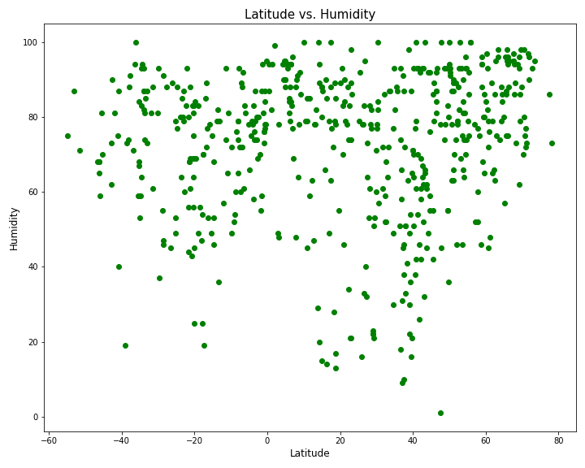
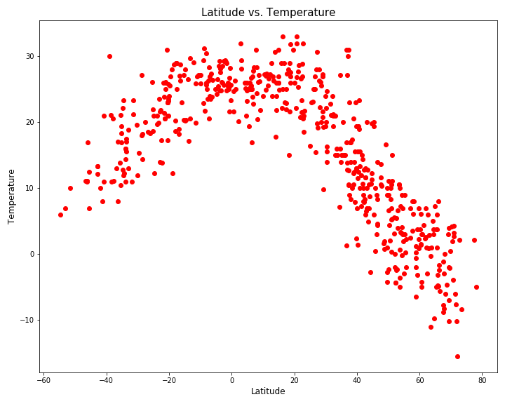

These are analysis of the weather data to determine if there are changes in weather as we move closer to or further away from the equator. To determine the data, we retrieved the data from the OpenWeatherMap API over 500 cities and analyzing the data into collections of tables and graphs. After putting each dataset together, we used Matplotlib to plot the data comparing Latitude with the weather information. The weather information includes Cloudiness, Humidity, Temperature, and Wind Speed. This site provides the source data and visualizations as a part of the analysis. And, also explains any trends and correlations that we discovered from examining our graphs.